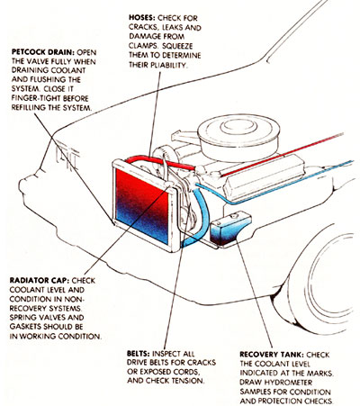

BITS AND PIECES
Limit the sizzle of the season to your back-yard grill.
In some cases the price of antifreeze has almost doubled.
WHAT'S THAT? SUMMER'S STARTING any minute and your mechanic says the car needs antifreeze? Sad but true; what once held sway as a winter ritual-draining the radiator and refilling the system with enough glycol to keep ice from forming-has now become a rite of spring, as well.
Antifreeze (or "coolant," depending upon your perspective) actually does several jobs. Sure, it still lowers the freezing point of water-that's to protect the engine block and other parts from cracking under the pressure of freezing, and expanding, water. But did you know it also helps raise water's boiling point? In the heat of summer, that quirk of physics can mean the difference between life in the fast lane and a stop on the shoulder.
Modern cars' you see, operate at higher temperatures than did vehicles of a decade or two ago. Pollution control devices, air conditioners, automatic transmissions and smaller, high-revving engines all put extra loads on the cooling system. However, water that normally boils at 212°F holds off for another 140 when it's mixed 50-50 with antifreeze. And that blend, when combined with 14 pounds of pressure in the system, won't start perking until reaching 263F-enough of a temperature boost to give hardworking engines room to run without overheating,
But that's not all. A good coolant is only about 90% ethylene glycol. The remaining portion is made up of inhibitors that restrict corrosion--a reaction to the antifreeze itself that, without additives, would eventually clog the system with rust and sediment.
There's no question that the cooling system should get periodic attention--a look at the fluid level every few months and a coolant protection-and-condition check once a year. But there are a couple of other things you should know.
First, the price of antifreeze has increased-in some cases almost doubling since a year ago. Though this increase was most apparent last fall, when demand was high, there wasn't much mention of it in the press. If you're still curious as to the cause, blame it on a series of economic surprises.
Antifreeze, you see, has its roots in petroleum, starting out as ethylene, which is processed from crude oil or natural gas. Ethylene is pretty popular these days; more than half the world's supply is earmarked for the production of polyethylene plastics-the wraps, bags and bottles our society seems to thrive on. Less than 20% is used for ethylene oxide, the chemical from which ethylene glycol is made.
Antifreeze, however, isn't the only product made from glycol, which is also used in polyester fiber, recording tapes and specialty films, and the popularity of fabric blends and videos is surging. Too, an explosion at an ethylene plant in Belgium opened an unforeseen European market for U.S. supplies, and fires at Shell and Texaco facilities last summer cut stocks even further.
In a nutshell, producers of antifreeze watched glycol prices triple in a few months. Either their products had to cost more, or the makers of other products would outbid them for available supplies. So it goes. But new plants coming on line about now should bring about a truce in the ethylene glycol war perhaps not lowering prices much, but at least stabilizing them.
And that leads to the second point. Antifreeze-even "permanent" antifreeze won't function forever in your cooling system. Though the freeze protection may go on for years, the silicate inhibitors that keep corrosion in check can break down in 12 to 24 months, especially in engines with aluminum components.
Even if you've only just gotten the knack of opening your car's hood, this regular spot check won't be difficult. Start by inspecting the coolant level when the engine is cold, with the ignition off. Remove the radiator cap (on the top or corner of the chamber in front of the fan blades), and look inside. The liquid level should be visible just below the filler neck or through an opening in the internal baffle that's part of some radiators. Many full-sized and subcompact cars have cross-flow radiators identified by their short, wide shapes; in vehicles incorporating these designs, the level can be up to three inches below the neck.
If your car's equipped with a recovery tank (a translucent plastic jug with the words "MAX" and "MIN" stamped on the side), the level in the tank should be checked visually when the engine's cold, and then later when it's fully warmed up. Don't remove the radiator cap when you're checking-simply read the coolant level through the tank wall to see if it's between the two stamped lines. A warm engine will show a higher level if the system's working properly.
The condition of the coolant should be checked, too. For $3 to $8, you can buy a hydrometer that'll let you draw a coolant sample and test it at the same time, right from the recovery tank. With nonrecovery systems, just remove the radiator cap (when the engine is cold), and then run the engine until the coolant begins to circulate; you'll know this has happened when the upper hose to the radiator gets hot.
Draw a full measure of coolant into the hydrometer's chamber, and look at it in the light. If it has weak color, a rusty brown color or particles of sediment floating in it, it's ready to be replaced.
If it's clean but shows a gauge reading of less than -341F (or 1.065 for hydrometers that measure specific gravity), you should add more antifreeze to the mix. But before you do that, check on the condition of the cooling system's components in case you have to replace any parts.
The radiator cap should have a working spring valve (caps with recovery tanks
have a smaller center return valve) and a good
rubber gasket. If the valve is stuck or the gasket is torn, get a new cap with the same pressure specifications as the old one.
Next, check the hoses. Look them over carefully for cracks and signs of leaks (especially at the end connections), or for places where clamps have cut in or sharp edges have chafed. Then squeeze each of the large radiator hoses. Both should be pliant but firm. Stiff rubber indicates overheating; soft hose has probably been damaged from oil or solvents. Replace them, and any of the smaller heater or bypass hoses, if needed, and be sure to use new worm-drive clamps.
Finally, inspect the fan belt and any other drive belts on the engine. Some small cars have electrically driven fans; locate the water pump on the engine block and trace the belt's route around that. Whether one flat belt drives all the accessories, or individual V-belts handle their own specific jobs, the rubber shouldn't be shiny and cracked or stained with oil. Neither should any internal cords be showing. Look for belt play of about one half inch between pulleys when you test for tension.
If the visible parts of the system check out OK, it's safe to add antifreeze after draining some of the old coolant from the petcock at the bottom of the radiator.
Should you have to replace coolant, drain the whole system and, engine running, flush it with water until the drained liquid runs clear. Then add the antifreeze first, before putting in enough water for a 50-50 mix (your owner's manual will tell you how many quarts of liquid your system holds). In extreme climates, a 7030 mix might be needed, but never add more than 70% antifreeze, since that will actually raise the freezing point above that of the optimum blend.
Refill the system through the radiator cap when the engine's cool. You'll need to remove the cap of a recovery-equipped radiator in order to fill it to the neck. Once the cap is replaced, the recovery tank can be topped to the "MAX" mark to achieve the proper level.
At a premium price, you certainly don't want to change antifreeze unnecessarily. But overworking the chemical can be costlier in the long run. By checking the cooling system for wear, leaks and other signs of trouble, you may save far more than the price of a currently fickle commodity.
|
 |
|
|